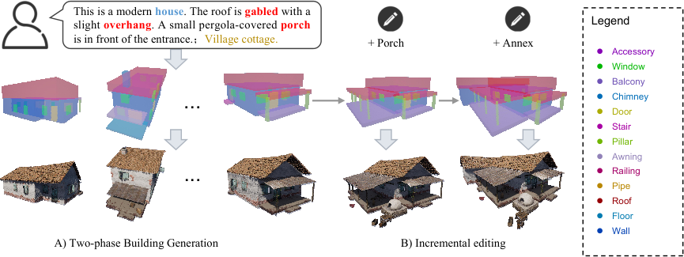
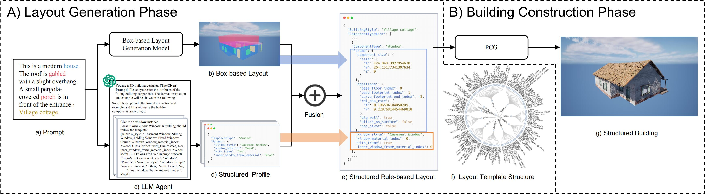
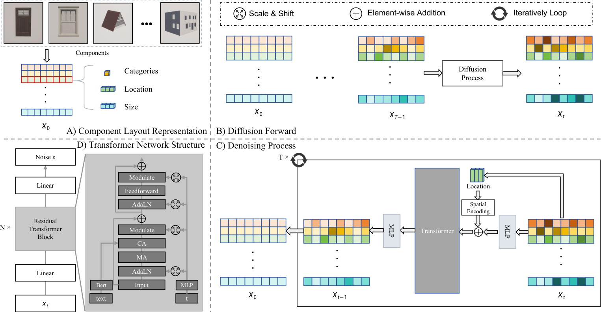
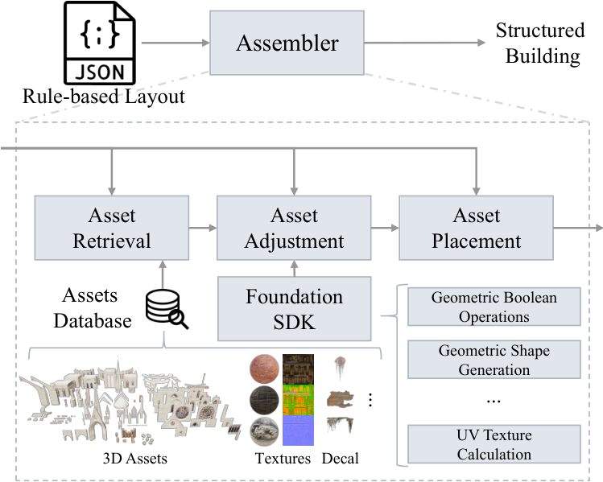
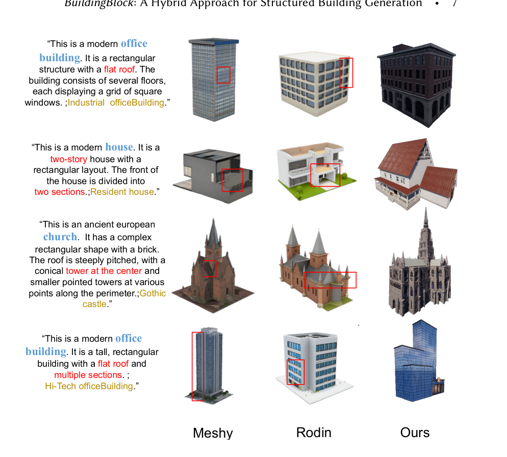
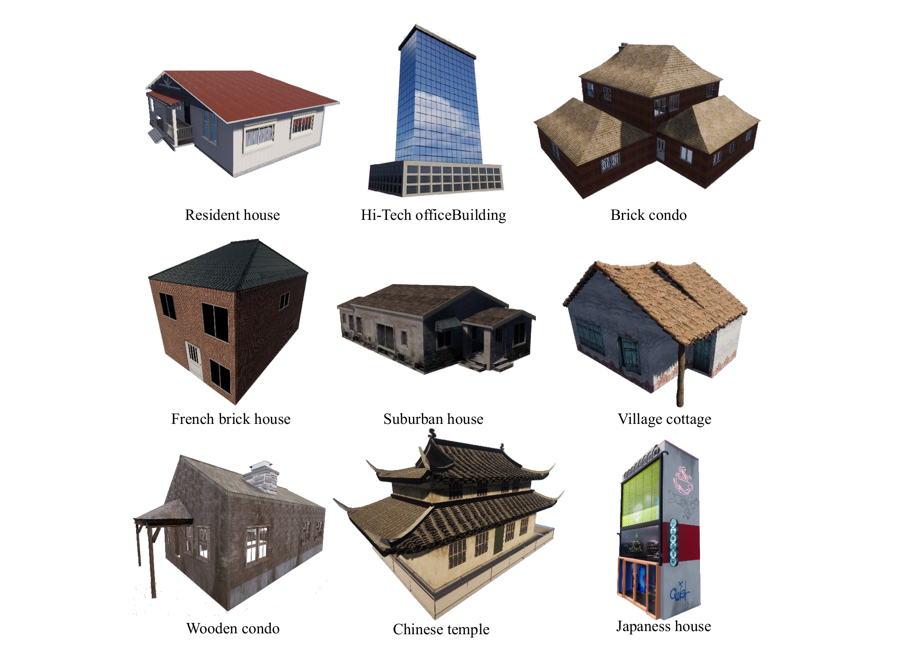
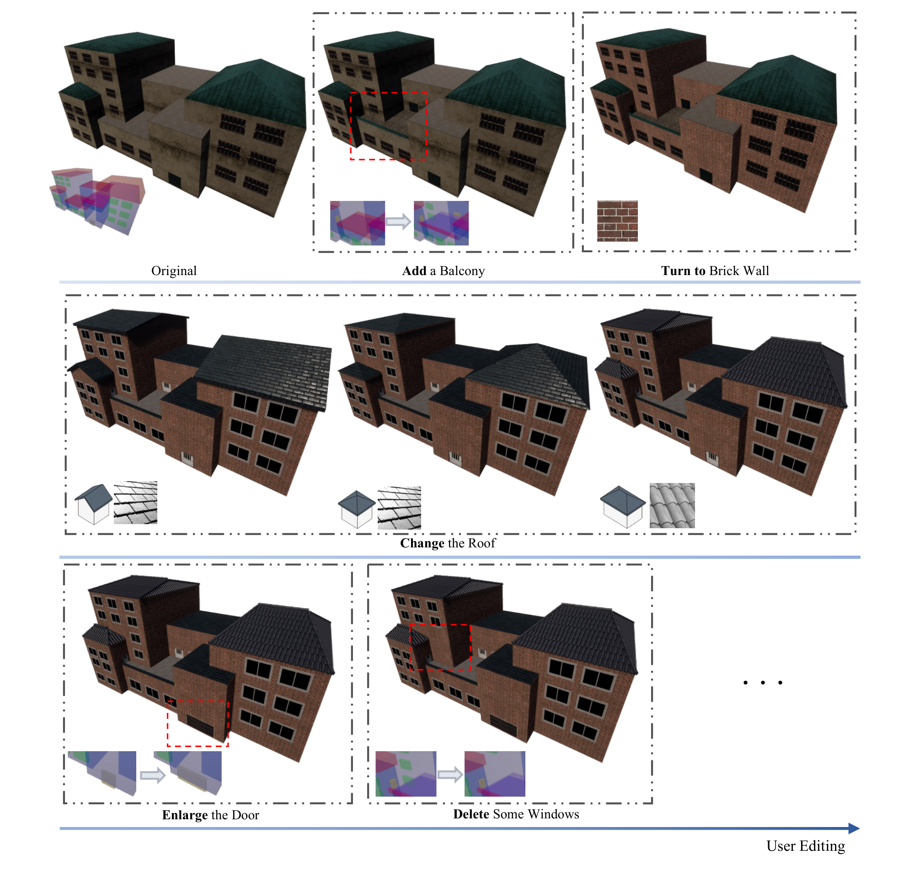

Abstract
Three-dimensional building generation is vital for applications in gaming, virtual reality, and digital twins, yet current methods face challenges in producing diverse, structured, and hierarchically coherent buildings. We propose BuildingBlock, a hybrid approach that integrates generative models, procedural content generation (PCG), and large language models (LLMs) to address these limitations. Specifically, our method introduces a two-phase pipeline: the Layout Generation Phase (LGP) and the Building Construction Phase (BCP). LGP reframes box-based layout generation as a point-cloud generation task, utilizing a newly constructed architectural dataset and a Transformer-based diffusion model to create globally consistent layouts. With LLMs, these layouts are extended into rule-based hierarchical designs, seamlessly incorporating component styles and spatial structures. The BCP leverages these layouts to guide PCG, enabling local-customizable, high-quality structured building generation. Experimental results demonstrate BuildingBlock's effectiveness in generating diverse and hierarchically structured buildings, achieving state-of-the-art results on multiple benchmarks, and paving the way for scalable and intuitive architectural workflows.
Overview
- What BuildingBlock is
- A hybrid pipeline for text-driven structured hierarchical building generation, combining a generative layout model, LLMs, and PCG.
- Two-phase pipeline
- LGP produces box-based layouts with a Transformer-based diffusion model and extends them into rule-based designs with LLMs. BCP uses those layouts to guide PCG.
- Architectural dataset
- A 3D architectural layout dataset with about 1.2k buildings and 42k components, plus multi-view renderings and descriptions.
- Editing
- Localized layout edits (add, delete, or restyle components) update the corresponding building parts while leaving the rest unchanged.
- Resources
- arXiv 2505.04051, DOI 10.1145/3721238.3730705, code, and dataset.

Figure 1. Our method can faithfully generate structured buildings from text prompts. From top to bottom: user instruction, box-based layout, structured building. A) The same text prompt can generate diverse layouts, which can further generate diverse buildings. B) An example of incremental local editing for an instance of part A.
Method Overview

Figure 2. The pipeline of BuildingBlock. Given a text description for the building, a stylized layout profile is first generated, which is obtained by fusing two phases. A) The Layout Generation Phase has a dual-branch structure, one diffusion-based branch produces bounding box generation for the layout, and the other LLM-based branch provides the style information extractor for the components. B) Then, the Building Construction Phase employs a PCG method to generate the corresponding structured building based on the stylized layout profile.

Figure 3. The process of box-based layout generation. A) The box-based layout representation, including categories, sizes, and locations. B) The noise addition process of the layout diffusion model. C) The denoising process of the layout diffusion model, where the traditional positional encoding is removed and replaced by spatial encoding from the spatial positions of boxes. D) The Transformer network structure used in the diffusion model.

Figure 4. The pipeline of our PCG.
Performance
Building layout generation
| Method | FID ↓ | KID ↓ |
|---|---|---|
| LayoutGPT* | 94.60 | 10.05 |
| ATISS | 30.93 | 3.34 |
| DiffuScene | 20.95 | 1.95 |
| Ours | 6.00 | 0.30 |
Table 1(a). Quantitative results of layout generation methods on building layouts. * denotes a zero-shot method. The best results in each column are highlighted in red, while the second-best results are highlighted in yellow.
Indoor layout generation
| Method | FID ↓ | KID ↓ |
|---|---|---|
| LayoutGPT* | 45.13 | 9.89 |
| ATISS | 18.60 | 1.72 |
| DiffuScene | 17.21 | 0.70 |
| Ours | 16.76 | 0.29 |
Table 1(b). Quantitative results of layout generation methods on indoor layouts (3D-FRONT bedrooms). * denotes a zero-shot method. The best results in each column are highlighted in red, while the second-best results are highlighted in yellow.
| PadReal | Spatial Encoding | FID ↓ | KID ↓ |
|---|---|---|---|
| × | × | 13.33 | 1.10 |
| × | ✓ | 12.22 | 0.95 |
| ✓ | × | 12.38 | 1.05 |
| ✓ | ✓ | 6.00 | 0.30 |
Table 2. Ablation study. Using PadReal or Spatial Encoding individually only brings slight improvements, but combining them allows the model to improve realism and diversity. The best results in each column are highlighted in red, while the second-best results are highlighted in yellow.

Figure 5. Qualitative comparison on unconditional layout generation. Layouts generated by LayoutGPT, ATISS, and DiffuScene exhibit misaligned layouts and floating components, such as windows that are not attached to walls. Our method produces high-quality layouts with coordinated components. Artifacts are marked with red boxes.

Figure 6. Qualitative comparison of buildings generated with state-of-the-art methods. Artifacts are marked with red boxes.

Figure 7. Diverse buildings generated with our method across varied styles, demonstrating flexibility and adaptability to regions, materials, and functions. The text beneath each building indicates the style used to retrieve components during generation.
Editing

Figure 10. An example of progressive localized user editing. An initially generated building is iteratively refined through progressive editing, including the addition, removal, and replacement of architectural components, as well as the modification of attributes such as size, material properties, and styles.
BibTeX
@misc{huang2025buildingblockhybridapproachstructured,
title={BuildingBlock: A Hybrid Approach for Structured Building Generation},
author={Junming Huang and Chi Wang and Letian Li and Changxin Huang and Qiang Dai and Weiwei Xu},
year={2025},
eprint={2505.04051},
archivePrefix={arXiv},
primaryClass={cs.GR},
doi={https://doi.org/10.1145/3721238.3730705},
url={https://arxiv.org/abs/2505.04051},
}